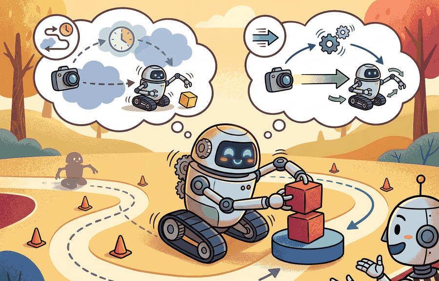

For Real-time inference and control rates, deployment quality is measured by the command stream, safety monitor state, and replayable evidence behind each command.
A Careful Control Loop

This section assumes familiarity with closed-loop control fundamentals from section 7.1 and state estimation concepts from section 8.6. The multirate integration patterns introduced here are applied directly to locomotion stacks in section 45.3, and the latency budgeting framework recurs in Part XII alongside hardware accelerator selection for edge deployment.
A robotic arm catches a falling object at 50 Hz or it misses. No amount of model accuracy compensates for an inference call that arrives 30 ms late. As embodied systems leave the lab and enter warehouses, hospitals, and homes, the gap between a model's theoretical capability and its real-time throughput is the single most common reason deployments fail. This section builds a latency budget from the sensor stream to the actuator command, shows how multirate control loops keep fast reflexes and slow reasoning in sync, and gives you the tools to decide whether your hardware can actually close the loop at the rate your task demands.
Problem First
A strong model can be unusable if inference arrives after the controller needed the decision.
The practical question is therefore specific: which observation arrives, which state estimate is trusted, which action is allowed, which monitor can interrupt it, and which artifact proves the claim afterward?
Every compared number in this section should be co-computed by one script on one task panel, with one seed plan and one saved artifact. That artifact carries success, failure, latency, safety, and robustness fields together.
Theory
Real-time deployment is a multirate systems problem. A stabilizing controller may run at 200 to 1000 Hz, a state estimator at 30 to 200 Hz, a learned visuomotor policy at 5 to 30 Hz, and a task planner at 0.5 to 2 Hz. These loops must exchange commands without violating freshness constraints.
Consider a specific case: Boston Dynamics Spot runs its joint-level balance controller at 1000 Hz while a vision-language policy such as RT-2 (Brohan et al., 2023) produces action tokens at roughly 3 Hz on an onboard GPU. The balance loop fires 333 times for every single vision token: the same robot, the same second, two radically different time scales. The gap is more than two orders of magnitude. The integration contract is that balance never waits for a vision token; instead the low-level controller holds the last valid joint setpoint until a fresh token arrives, and any token older than 333 ms (one planner cycle) is discarded rather than executed. A similar pattern appears in ETH Zurich's ANYmal deployments, where the locomotion policy runs at 50 Hz and the navigation planner at 2 Hz, with explicit staleness checks at the handoff boundary.
A useful contract is
$$\Pr(\tau_{\mathrm{age}} > \tau_{\max}) \le \epsilon,\qquad \tau_{\mathrm{age}}=\tau_{\mathrm{sense}}+\tau_{\mathrm{queue}}+\tau_{\mathrm{infer}}+\tau_{\mathrm{publish}}.$$
Average latency is not enough. Physical instability is typically triggered by the tail of the latency distribution, so p95 and p99 command age belong in the same artifact as task success.
The mechanism is observe, estimate, choose, constrain, execute, monitor, log, and review. Each verb has an owner in the deployment architecture and a field in the evaluation artifact.
Worked Example
A legged robot often stabilizes at high rate while a vision module and a policy run much more slowly. The safe pattern is to hold the low-level loop constant and explicitly decide when a slower policy output is still fresh enough to consume.
from statistics import quantiles
control_period_ms = 5
command_ages_ms = [28, 32, 35, 31, 40, 29, 36, 34, 52, 33]
max_freshness_ms = 40
p95 = quantiles(command_ages_ms, n=20)[18]
deadline_miss_rate = sum(age > max_freshness_ms for age in command_ages_ms) / len(command_ages_ms)
degraded_mode = p95 > max_freshness_ms
report = {
"section": "55.2",
"control_period_ms": control_period_ms,
"policy_age_p95_ms": round(p95, 1),
"deadline_miss_rate": deadline_miss_rate,
"degraded_mode": degraded_mode,
}
print(report){'section': '55.2', 'control_period_ms': 5, 'policy_age_p95_ms': 57.4, 'deadline_miss_rate': 0.1, 'degraded_mode': True}The expected output should make the control decision obvious. Here the p95 command age exceeds the freshness threshold, so the correct interpretation is not merely that latency is "a bit high" but that the stack should enter a degraded mode or reduce reliance on the slow policy.
- Freeze the high-rate stabilizer and measure its independent stability margin.
- Choose the learned policy rate and a maximum command age budget.
- Buffer, timestamp, and reject stale commands explicitly.
- Log p50, p95, p99 latency and deadline misses under nominal and stressed compute load.
- Switch to degraded mode whenever the freshness contract is violated repeatedly.
Select the high-rate loop frequency first by the plant dynamics: a robot with a 10 ms mechanical settling time needs at least a 500 Hz torque loop, regardless of what the policy can produce. Set the policy rate as fast as your inference budget allows while keeping p99 command age below one high-rate cycle. Revise rates when either condition breaks: if profiling shows p99 age growing under load, reduce policy complexity or add a hardware accelerator before raising the rate target. If the plant starts oscillating at the current torque-loop frequency, the stabilizer gain, not the rate, is usually the fault.
The hand-built record is about 24 lines. In a production run, DVC, MLflow, Weights and Biases Artifacts, or a ROS 2 bag plus metadata file reduces the tracking code to a few calls while handling versioning, file storage, run ids, and reproducible retrieval. The hand-built version remains useful because it shows which fields the tool must preserve.
Practical Recipe
- Write the observation, action, monitor, metric, and artifact fields before selecting a model.
- Run a deterministic smoke test and one named perturbation from the panel.
- Log success, safety events, latency, energy or resource use, and recovery status in the same row group.
- Compare only methods evaluated by the same script on the same panel and seed plan.
- Attach a short postmortem to each failed rollout so the artifact remains useful after the plot is forgotten.
Teams often optimize mean inference time while ignoring queue buildup. The robot then fails when a burst of sensor callbacks or one GPU stall pushes command age past the control horizon.
In ROS 2, set the subscription queue depth to 1 (not the default 10) for any topic that feeds a time-critical policy: rclpy.qos.QoSProfile(depth=1). A deeper queue lets stale messages accumulate silently, so when inference falls behind the robot executes old sensor data rather than discarding it. Pair this with a message-age check inside the callback that compares msg.header.stamp against self.get_clock().now() and drops any message older than one high-rate control cycle before it reaches the policy.
On a Franka Panda manipulation cell running ACT (Action Chunking with Transformers) at 10 Hz over a 100 Hz Cartesian impedance loop, a deployment review inspects a single run folder containing: the ACT checkpoint hash, the RealSense D435 calibration file, per-step joint torque traces (logged at 1 kHz via FCI), monitor transitions (torque-limit trips and joint-velocity ceiling hits), a wrist-camera replay video, and a metric table with p95 command age and task success per object pose. The review asks whether p95 command age stayed below 100 ms (one ACT chunk period) across all 20 rollouts, and whether any torque-limit trip correlated with a spike in command age, not whether the mean success rate looks acceptable in isolation.
Deployment work increasingly studies asynchronous policies, action chunking, and speculative planning to fit large models inside real-time control loops.
Can you name the metric contract, perturbation panel, monitor state, and artifact id for Real-time inference and control rates? If any field is missing, the claim is not yet audit-ready.
Real-time inference and control rates becomes operational when the metric is tied to a runtime interface. The interface names the sensor stream, state estimate, action representation, timing budget, safety or robustness monitor, and deployment artifact.
The disciplined habit is to separate three claims. The conceptual claim explains why the method should help. The systems claim explains which interface it changes. The evidence claim records which measurement would convince a skeptical builder.
| Tool or Library | Role in Real-time inference and control rates |
|---|---|
| ROS 2 executors | Coordinate callback timing and process boundaries. |
| TensorRT | Optimizes inference latency on edge hardware. |
| OpenTelemetry | Traces inference, planning, and controller timing across processes. |
Cross-References
For Real-time inference and control rates, connect benchmark design, sim-to-real transfer, uncertainty, and safety barriers through the deployment artifact that will be checked before release.
Create a JSON or Parquet artifact for five rollouts of Real-time inference and control rates. Include fields for configuration, seed, perturbation, metric values, monitor state, and a short failure label. Then rerun the same panel with one changed policy setting and verify that both methods can be compared row by row.
When a rate contract fails, classify the fault as sensor backlog, estimator lag, inference stall, middleware queue growth, scheduler preemption, or controller integration error. Then isolate that mechanism with one targeted perturbation such as synthetic GPU contention or callback bursts.
For Real-time inference and control rates, schema strictness is cheaper than discovering a missing field during a moving-robot trial; require the log before comparing outcomes.
Real-time inference and control rates is valuable when it changes the closed-loop decision and leaves behind evidence that another builder can audit.
Design a same-artifact evaluation for this section. Specify the environment, rollout panel, seed plan, metric fields, monitor fields, one perturbation, and one rollback or recovery rule.
Section References
Quigley, M. et al. ROS: an open-source Robot Operating System. ICRA Workshop, 2009.
Use for the robotics middleware lineage behind nodes, topics, services, bags, and deployment boundaries.
OpenTelemetry project documentation. https://opentelemetry.io/docs/
Use for tracing, metrics, and logs when robot deployment evidence must connect software events to runtime behavior.
After Real-time inference and control rates, the next section should reuse the artifact schema while changing one deployment interface or failure mode, so comparisons remain auditable.